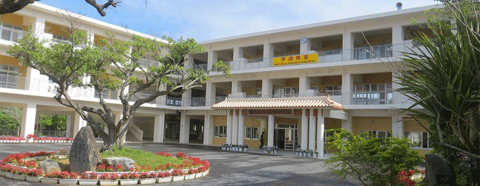

校訓と、CS の活動
学
学ぶ場をひろげる
学校は学ぶ場である
名護中まちなかクラブ。ヒンプンガジュマルや商店街も、生徒の教室になります。
真
真剣な大人に出会う
学ぶ者は真剣である
語れー会・講演会・てんたばる学校地域講座。地域で本気で働く大人が、先生になります。
素
素直に受けとめる
学ぶ者は素直である
朝ごはんPJ・放課後学習支援。地域の手で、毎日の学びの土台を支えます。
お知らせ・今後の予定
今後の予定
お知らせ
新しい記事
活動の紹介
活動の実績
朝ごはんPJ 昨年度（2025年11月〜2026年3月）
- 10回開催
- 404名利用者（のべ）
- 92名ボランティア（のべ）
朝ごはんPJ 今年度（2026年10月7日現在）
- 4回開催
- 246名利用者（のべ）
- 61名ボランティア（のべ）
利用者は、生徒と大人をあわせた数です。ボランティアは、地域のみなさん・保護者・学生・高校生です。
てんたばる語れー会（2026年9月7日現在）
- 2010年〜名護中で始まった年
- 176回これまでの開催
- 21〜23名1回の講師（地域の方）
地域の方が朝の時間に各教室に入り、生き方や地域について中学生に語る取り組みです（学校のホームページと、琉球新報 2025年3月5日の記事から）。
名護中まちなかクラブ（2026年9月〜）
- 6名3年生の希望者
関わりたい方へ
講師として話す、当日の手伝い、活動へのご意見など、関わり方はさまざまです。